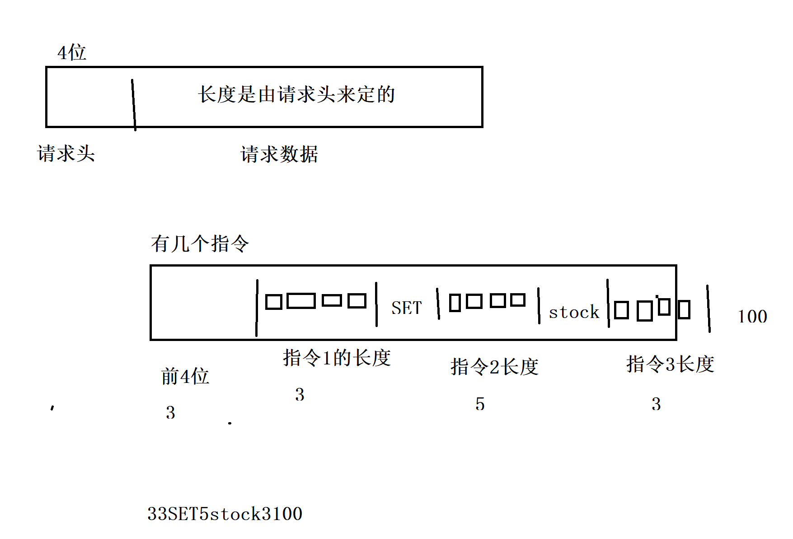

07. 发送指令
一、请求包定义
请求包定义为:
指令个数（4byte）|指令1长度(4byte)|指令1内容|指令2长度(4byte)|指令2内容|...等等
譬如：
set key value 的请求包为
3|3|set|3|key|7|我是value
get key的请求包为
2|3|get|3|key

二、请求包组装
代码为：
static int32_t send_request(int fd, const *cmds[]) {
uint32_t len = 4;
char **cmd_pointer = cmds;
int cmd_size = 0;
while (*cmd_pointer) {
len += 4 + strlen(*cmd_pointer);
cmd_pointer++;
cmd_size++;
}
if (len > MAX_MESSAGE_LEN) {
return -1;
}
// header 4 byte
char wbuf[4 + MAX_MESSAGE_LEN];
memcpy(&wbuf[0], &len, 4); // assume little endian
memcpy(&wbuf[4], &cmd_size, len);
size_t cur = 8;
cmd_pointer = cmds;
while (*cmd_pointer) {
uint32_t p = strlen(*cmd_pointer);
memcpy(&wbuf[cur], &p, 4);
memcpy(&wbuf[cur + 4], *cmd_pointer, strlen(*cmd_pointer));
cur += 4 + strlen(*cmd_pointer);
cmd_pointer++;
}
int32_t err = write_message(fd, wbuf, 4 + len);
if (err) {
return err;
}
}
三、请求包解析
代码为：
static int32_t parse_request(
const uint8_t *data, size_t len, char *cmds[]) {
if (len < 4) {
return -1;
}
uint32_t n = 0;
memcpy(&n, &data[0], 4);
if (n > MAX_MESSAGE_LEN) {
return -1;
}
size_t pos = 4;
uint32_t cmd_index = 0;
while (n--) {
if (pos + 4 > len) {
return -1;
}
uint32_t sz = 0;
memcpy(&sz, &data[pos], 4);
if (pos + 4 + sz > len) {
return -1;
}
cmds[cmd_index] = malloc(sz * sizeof(char));
memcpy(cmds[cmd_index], &data[pos + 4], sz);
pos += 4 + sz;
cmd_index++;
}
return cmd_index;
}
标签：无